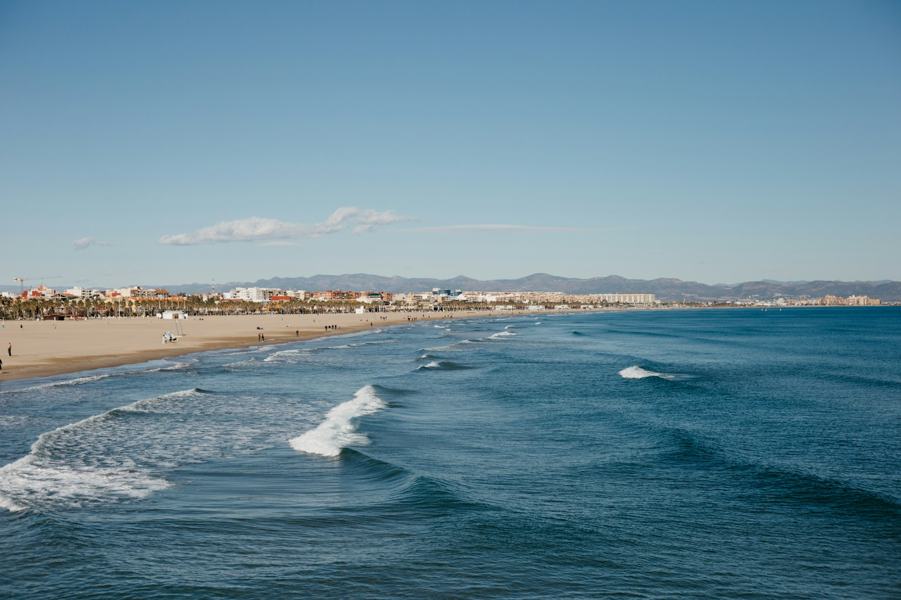
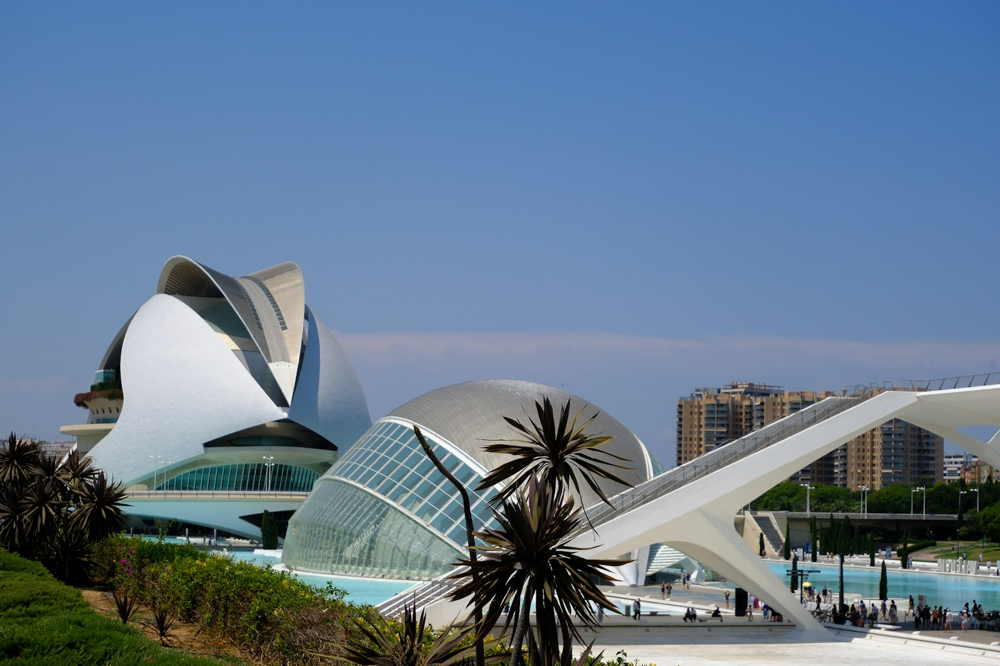

交通出行指南
瓦伦西亚城市交通系统完善，萨贡托作为卫星城通勤便利，高铁 25 分钟直达市区。
Cercanías 近郊铁路
萨贡托 ↔ 瓦伦西亚的 C-5 / C-6 线，25分钟直达市中心（Valencia Nord 站）。单程€3.6，月票€55。运营时间5:30–23:00，高峰每15–20分钟一班。
主力通勤市内公交 & EMT
瓦伦西亚 EMT 公交网络覆盖全城，单程€1.5，充值卡 Suma 10 次€9。萨贡托有本地公交和前往海滩的季节性班车，票价€1.2。
日常出行自行车 & 慢行
瓦伦西亚拥有200+公里自行车道，图里亚河公园贯穿全城——适合骑行通勤。Valenbisi 公共自行车年费仅 €29。
推荐体验高铁 & 长途
瓦伦西亚 Joaquín Sorolla 站：AVE 高铁1.5小时达马德里，3小时达巴塞罗那。萨贡托站也有部分长途列车停靠，北上 Castellón、Tarragona 十分便捷。
城际旅行机场连接
瓦伦西亚机场（VLC）距市区8公里，地铁3号线直达。飞往欧洲各大城市（巴黎、伦敦、罗马）约1.5–2.5小时。从萨贡托驾车约30分钟、火车换乘约45分钟。
国际门户自驾 & 租车
Sixt、Hertz、Europcar 等国际租车公司遍布机场及市区。AP-7 高速贯通全境，二手车 €5,000–8,000 可购得可靠车型。老城区限行多，停车需留意蓝/绿线规定。详见下方租车指南。
灵活出行萨贡托 → 瓦伦西亚
- 火车 Cercanías25分钟
- 自驾（AP-7）25–30分钟
- 自驾（免费公路）35–40分钟
- 月交通成本€55–100
瓦伦西亚市内
- 地铁/有轨电车10条线路
- 公交覆盖60+条线路
- 月交通卡 Suma€35–55
- 单车出行占比15%
瓦伦西亚 → 主要城市
- → 马德里 AVE1h38min
- → 巴塞罗那 AVE2h50min
- → 阿利坎特1h20min
- → 马略卡（渡轮）5h
自驾探索
地中海海岸线
在瓦伦西亚租车是探索周边小镇和隐秘海滩的最佳方式。机场和市区均有多家国际及本地租车公司，提前在线预订通常比门店便宜 30–50%。
- Sixt — 德国品牌，车型新颖、车况优良。瓦伦西亚机场 + 市中心 2 家门店，紧凑型约 €25–40/天，全险 €15–20/天
- Hertz — 全球最大租车公司，服务规范、救援网络完善。中型家庭车约 €35–55/天，支持中文客服与导航
- Europcar / Goldcar — 性价比之选。Goldcar 为西班牙本土品牌，旺季小型车低至 €12–20/天，但需留意附加险条款
- Centauro / Record Go — 本地连锁，提供机场⇆市区免费接驳。长租（1周以上）有显著折扣，月租 €300–500 起

驾照要求
持中国驾照 + 西班牙官方翻译件或国际驾照（IDP）即可租车。建议在国内提前办好公证翻译件。
保险怎么选
建议购买全额险（Cobertura Total），含碰撞、盗抢和第三方责任。用 RentalCover.com 单独购买通常比柜台便宜 40%。
平台比价
Rentalcars.com、DiscoverCars.com 聚合比价，免费取消。旺季（7–8月）至少提前 2 周预订，价格可低一半。
停车 & 限行
老城区多 ZBE 低排放区，GPS 导航选"避开限行"。蓝线付费停车 €1–2/小时，白线免费但车位稀少。

火车票 & 地铁票
一站式攻略
西班牙铁路系统覆盖广、准点率高。高铁 AVE、近郊 Cercanías 和地铁无缝衔接，用好以下购票工具，出行事半功倍：
- Omio — 欧洲最流行的跨平台购票 App，支持中文界面。可同时搜索 AVE、巴士和航班，票价透明，电子票直接扫码进站
- Trainline — 专注欧洲铁路，界面简洁、退款便捷。Renfe 官网偶尔卡顿，Trainline 体验更流畅，价格与官网一致
- Renfe 官网 & App — 西班牙国铁官方渠道，提前购票享 Promo 价（低至 4 折）。AVE 最早提前 90 天放票，越早越便宜
- Metrovalencia 官方 App — 地铁/有轨电车专用，支持 Suma 卡在线充值，实时查询线路与班次，界面简洁好用
Suma 交通卡
瓦伦西亚统一交通卡，覆盖地铁、公交、Cercanías（同区内）。月卡 €35–55，10 次卡 €9，地铁站自助机随买随充。
AVE 买票时机
提前 30–90 天购票可享 Promo 价，瓦伦西亚→马德里低至 €22。周五下午和周日晚上为高峰，价格翻倍。
Cercanías 通勤
萨贡托→瓦伦西亚 Nord 站 C-5/C-6 线，单程 €3.6。Renfe Cercanías App 可购票，或车站自助机（有英文界面）。
避坑提醒
AVE 需提前到站安检（类似机场）。Omio/Trainline 价格含手续费，Renfe 官网价格最低但需西班牙银行卡付款。
西班牙当地
手机卡办理攻略
落地西班牙第一件事——办一张当地电话卡。三大运营商 Movistar、Vodafone、Orange 覆盖全国，虚拟运营商（DIGI、Lowi 等）性价比更高。Prepago 预付费卡凭护照即可办理，无需 NIE 和西班牙银行账户，即办即通。
- Vodafone Prepago S — 入门首选，90GB €10/28天，无限本地通话+国际分钟。M档270GB €15，5G+eSIM 齐全，英语客服友好
- Orange Prepago 10 — 60GB €10/28天，无限通话+EU漫游。有中文客服热线，门店遍布全城。240GB €15、无限流量 €35
- Movistar Prepaid Plus — 覆盖最广（农村也不掉线），60GB €10/28天，5G 覆盖领先。240GB €15，适合常去偏远地区的用户
- DIGI（性价比之王） — 50GB 仅 €7/28天，100GB €10、150GB €12。eSIM 免费、流量可结转，2025–2026 承诺不涨价

办理门槛
Prepago 仅需护照原件，门店即办即激活（SIM 卡强制实名注册，需拍照留存）。合约卡需 NIE + 西班牙 IBAN 银行账户。
哪里购买
机场到达厅、市中心商业街、购物中心均有 Vodafone / Orange / Movistar 门店。部分 Tabacos 烟草店和手机配件店也售基础 SIM 卡。
MVNO 省钱之选
Lowi（Vodafone 网络，50GB €8）、Simyo（Orange 网络，40GB €10）、Lobster（Movistar 网络，英语服务）。携号转网 1–2 天即可完成。
避坑提醒
预付费按28天循环≠整月，续费日会逐渐前移。打回国优先用 WhatsApp/微信。合约卡买机分期通常锁定 24 个月，提前解约需付违约金。